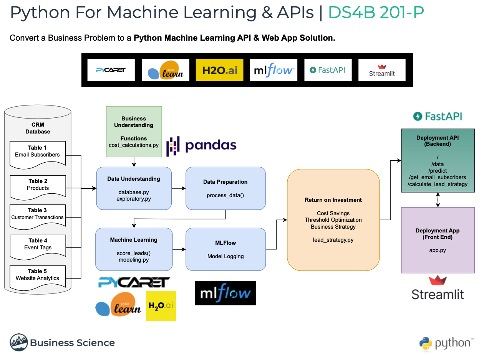
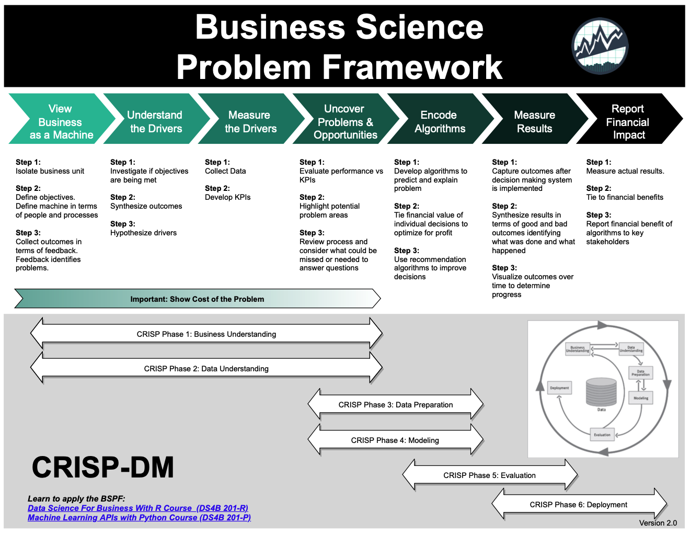
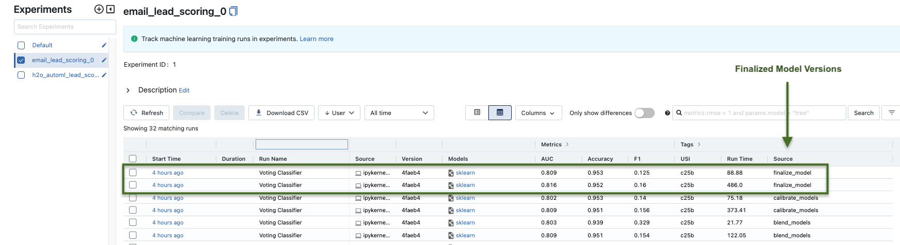

1 Introduction
Businesses face challenges in identifying and prioritizing potential customers and/or identifying the future purchase potential of current customers based on their email interactions, leading to sub-optimal allocation of resources and missed opportunities.
Email lead scoring plays a crucial role in determining the quality and conversion potential of leads generated through email marketing campaigns. Email lead scoring is a method used by marketers and sales teams to evaluate and prioritize leads based on their potential to become customers. It involves assigning scores or ratings to individual leads based on their behavior, interactions, and other characteristics. However, the traditional manual lead scoring methods are time-consuming, subjective, and often produce inconsistent results. Additionally, these methods do not fully leverage the available data, such as email content, sender information, and historical customer interactions.
Machine learning based solutions can effectively evaluate the probability of leads converting into customers based on various data points extracted from email interactions. This solution should take into account factors like email open rates, click-through rates, response times, engagement patterns, and historical customer data to provide a comprehensive lead score.
By leveraging machine learning algorithms, such as classification models businesses can create a reliable and automated system that can accurately score and rank email leads according to their conversion potential. The solution will empower email marketers to prioritize their efforts and resources more effectively, enabling them to focus on the most promising leads and improve overall sales and marketing efficiency.
Note: This project was completed as part of the Python for Machine Learning and APIs course by Business Science University.

The project demonstrates and end-to-end email lead scoring solution for a business, from initial analysis, to modeling, to deployment. Skills demonstrated in this project include -
- Project management. ✅
- Business understanding. ✅
- Business return on investment and sensitivity analysis. ✅
- Exploratory data analysis. ✅
- Machine learning (using tools like python, pycaret, mlflow). ✅
- Model deployment (using tools like fastapi and streamlit). ✅
Above all, the project demonstrates how to solve key business problems in the real world.
2 Problem Statement & Objective
As mentioned earlier, this analysis provides a lead scoring solution for an online educational company. The company offers training courses (their main product) in data science and has a large email list of 100,000 subscribers (or leads), with a monthly growth rate of 6,000 new subscribers. The marketing team also sends out 5 emails per month and the business’s sales cycle generates approximately $250,000 in revenue per month.
Subscribers and Leads will be used interchangeably throughout this project. Note they both refer to the same thing.
However, the email list also experiences a significant number of unsubscribes, about 500 per email, resulting in a total of 2,500 unsubscribes per month.
This high unsubscribe rate indicates potential inefficiencies in the email marketing strategy. In addition, high unsubscribe rates can result in reduced revenue, especially if the business relies heavily on email marketing as a primary channel for generating leads and driving conversions. To sustain and increase revenue, it is crucial to optimize the email marketing approach and maximize customer conversion rates. The business also believes that nurturing lost customers could potential convert about 5% of them back into active customers.
2.1 Objective
Given these key insights, the problem at hand is to develop an effective email list scoring and segmentation strategy. The goal is to identify and prioritize the most valuable leads (in terms of probability of making a purchase) to target for sales emails, while also identifying leads with a low probability of purchase to nurture and increase their likelihood to purchase.
In summary, the primary objective is to leverage email list scoring and segmentation techniques to improve customer engagement, reduce unsubscribes, increase customer conversion rates, and ultimately maximize revenue and customer lifetime value.
Now that we have a general understanding of the problem statement and the objective, the next sections will focus on a business solution process using the Business Science Problem Framework.
2.2 What Is the Business Science Problem Framework

The Business Science Problem Framework (BSPF) is a structured approach used for solving complex business problems, especially those involving data science and analytics. It’s designed to streamline the process of transforming a business problem into an analytical problem, and then into a data science solution.
3 Business Understanding
This section falls under the Understanding drivers Phase of the BSPF.
Addressing business challenges like these demands significant resources, including both time and money. Therefore a key question to ask is “is this problem worth solving?”
In this phase, the key is to highlight why this problem should be a business priority. One way to achieve this is by calculating the cost of the business problem by understanding how high unsubscribe rates lead to lower revenue. Our goals in this phase include -
Cost Assessment - Assign a cost to high unsubscribe rates, thus giving the business a point estimate of annual costs of unsubscribe rates. This step does NOT account for the growth rate of email lists.
Improve Cost Analysis - Improve on cost assessment by accounting for email list growth uncertainty.
Business Cost Simulation - This step is necessary to model costs under varying key inputs, especially when accounting for uncertainty.
3.1 Cost Assessment
Given the values highlighted in the problem statement section, we can estimate the monthly lost revenue (we’ll refer to this as cost going forward) due to unsubscribes to be around $250K per month (or $3M annually), not factoring in email list growth rate. This hidden cost is shown in the table below -
After factoring in a 3.5% monthly email list growth rate (last column), we can expect the lost revenue due to unsubscribes to rise to around $364K per month (or $4.3M per year), an increase of 46% in lost revenue.
We can see the high cost of this problem which is the lost revenue to the business. However, the values shown in the table above do not factor in uncertainty. We can thus improve on our cost assessment by factoring in uncertainty in some of the drivers. Let assume some monthly variability in email list growth rate and conversion rate. The heatmap below shows a cost simulation with variability. The y-axis represents various levels of customer conversion rate while the x-axis represents various levels of email list growth rate;
We can see that regardless of how the drivers vary, we can still expect to see annual costs ranging from $2.61M to $4.38M. Thus this is definitely a problem worth solving.
At this point, a key question is “can we reduce the unsubscribe rate?”. Recall that the business is losing 500 subscribers for every email sent out. What if we can reduce that number by 50% (or 250), while maintaining 90% of revenue. What impact will that have on the business?
The only problem is that we still do not know a lot about what causes a subscriber to make a purchase. If we do, we can focus on targeting the ones that are more likely to purchase with sales emails and nurture the ones who are unlikely to covert at the moment. This will help with our goal of reducing the unsubscribe rate while maintaining 90% of revenue.
4 Data Understanding
This section falls under the Understand The Drivers Phase of the BSPF.
This phase requires understanding the data available at our disposal to tackle this problem. The visual below gives an overview of the company’s crm database including table and field descriptions. Connecting arrows show how each table can be linked to other tables based on common fields.
Note: We will not be using the website table in this project.
4.1 Exploratory Data Analysis
After some initial data manipulation to get the data in the right format we need for analysis, including adding a target feature which is a binary flag of if a lead has made a previous purchase or not (we’ll call this target feature made_purchase), we can then begin to do some initial exploratory analysis to get a sense what features in our dataset could be predictive of leads making a purchase.
First, lets analyze our target feature made_purchase.
4.1.1 Proportion of Subscribers with Previous Purchase

Observation: Only 5% of leads have made a previous purchase, meaning we are dealing with a highly imbalanced dataset.
4.1.2 Member Rating vs Made Purchase
The plot below shows the different values of member_rating vs the proportion of made_purchase for users with each value of member_rating -
Observation: member_rating appears to be quite predictive of made_purchase. We can see that the likelihood of a user making a purchase increases 3x when the member_rating goes from 1 to 2. Additionally the likelihood of making a purchase increases 5x when the member_rating goes from 2 to 5.
4.1.3 Country Code vs Made Purchase
The plot below shows country_code along with the within group made_purchase proportion, for the top 10 countries in terms of count of users -
Observation: country_code also appears to be quite predictive of made_purchase as well.For example we can see that while the US has the most users (over 3,500), the proportion of US users who have made a purchase is ~10%. However a country like AU, which has less than 500 users has a higher proportion of users who have made a purchase (~12%).
4.1.4 Tag Count vs Made Purchase
The plot below shows tag_count along with the within group made_purchase proportion, for a selected number of tag_count. Recall that tags here refer to various events like webinars. Therefore tag_count refers to the number of such events a user has attended -
Observation: We can see that if a subscriber has 40 or more tags (events), they are 100% likely to make a purchase. That likelihood drops as tag_count decreases. Note that a lead with 0 tags only have a 2% likelihood of making a purchase. For those with 0 tags (meaning they have not attended any events yet) we may not want to send them emails just yet. We may want to try and nurture them to attend more events before trying to get them to make a purchase. Overall if the business can get leads to attend more events, it drastically increases their likelihood of making a purchase.
4.1.5 Correlation
The plot below is a correlation heatmap of numeric features only -
Observation: These correlation values further validate some of the data we saw earlier. We can see that tag_count and member_rating do show a fairly high correlation with made_purchase.
5 Formulating KPIs
This section falls under the Measure the Drivers/Uncover Problems and Opportunities phase of the BSPF
Now that we have a bit more understanding of some of the potential drivers of made_purchase, we may want to develop some hypothesis about how to improve the likelihood of a lead making a purchase by applying some of the insights we just learned. For example;
“Can we reduce the number of sales emails sent to subscribers by 30% and still maintain 99% of sales revenue?”
Can we segment our email list into hot and cold leads? Hot-Leads meaning those who are more likely to purchase (subscribers with high member_rating for example), and Cold-Leads meaning those less likely to purchase (subscribers with low member_rating). This way we could come up with a strategy to only send sales emails to hot leads, while nurturing cold leads to increase their likelihood of purchase.
One of such KPIs could be to increase the median tag_count. Looking at the table below, we can see that the median tag_count for those who have not made a purchase is 0 while for those who have made a purchase, the median tag_count is 2. Thus, we could establish a KPI for Cold-Leads to get their median tag_count to 2 or more (attend 2 or more webinars/events) and increase their likelihood of making a purchase.
| Category | Total Leads | Made Purchase |
|---|---|---|
| Cold-Leads | 5,528 | 49 |
| Hot-Leads | 14,691 | 913 |
6 Feature Engineering
This section falls under the Encode Algorithms phase of the BSPF
Now that we have a better understanding of our data and what features might be predictive of a subscriber making a purchase, the next phase in our workflow is creating preprocessing pipelines to get our data in the right form for machine learning algorithms. Feature Engineering is the process of selecting, manipulating and transforming raw data into features that can be used in supervised learning algorithms.
Understanding the business context and having domain expertise can greatly influence the choice and creation of features. Different businesses and domains may have unique characteristics, specific factors that impact the target variable, and relevant attributes that need to be considered during feature engineering.
For this analysis, the following addition features were created from existing data;
optin_days- Generated fromoptin_time. This is the number of days the subscriber has been on the company’s email list.email_provider- Generated fromuser_email. Multiple email providers (such as gmail, hotmail) etc are being used by subscribers, and could be helpful in predicting made_purchase.activity_per_time- Generated by dividingtag_count(count of events a subscriber has attended) by the newly createdoptin_days.One-To-Many Features (
tags) - These are binary features (0s or 1s) for each tag (event) to indicate if a user attend the event or not.Reducing High Cardinality - Applied to
country_code. Using a threshold of 6, this process lumps countries that have less than 6 subscribers in the dataset into anothercategory.
To demonstrate the importance of feature engineering in this analysis, we’ll show an example of some of the new features created and their relationship with made_purchase (or target). The plot below shows the proportion of leads who made a purchase for 9 randomly selected tags (events). Looking at the first event (tag_learning_lab_09) we can see that if a lead attended that event, they have a 19% likelihood of making a purchase vs only 5% if they did not attend the event. For tag_learning_lab_12, the likelihood of making a purchase if they attended that event is 28% vs 5% if they did not. We can also see similar trends for the other tags.
This indicates that these additional features could be indicative of made_purchase.
7 Machine Learning
This section falls under the Encode Alogrithms phase of the BSPF
This phase of the analysis focuses on encoding algorithms for email lead scoring. As a reminder the goal is to predict and score email subscribers that are likely to make a purchase, based on features identified and engineered in previous sections. Therefore this is a binary classification problem. For modeling, we use the Pycaret python package. Pycaret is an open-source, low code machine learning library in Python that automates machine learning workflows. Pycaret is not only a package for building machine learning models, instead it is an end-to-end machine learning and model management tool that makes it easy to experiment with multiple machine learning models, while logging all experiments.
7.1 Testing Multiple Models
Several models were initially tested, using Area Under the Curve (AUC) as the key metric. Higher AUC indicates a better-performing model in distinguishing positive and negative leads. The chart below shows the AUC along with other metrics from initial modeling. We can see the top 3 models in terms of AUC are Gradient Boosting Classifier (0.8044) CatBoost Classifier (0.8015) and Ada Boost Classifier (0.7965).
7.2 Model Metrics
Here we can examine metrics for the Catboost model.
The choice of Catboost, a tree-based model, is driven by its inherent advantage in explainability, which is critical for understanding model decisions and behavior. It’s important to note that the final model selection will be determined in the Return on Investment (ROI) section of the course. However, it is worth mentioning that all the models under consideration exhibit very similar performance metrics. Consequently, regardless of the final choice, we can anticipate that the selected model will demonstrate metrics comparable to those of the Catboost model. This consistency across models ensures reliability in the anticipated performance, irrespective of the specific model chosen.
7.2.1 AUC-ROC Plot
An AUC-ROC (Area Under the Receiver Operating Characteristic Curve) plot is a graphical representation that summarizes the performance of a binary classification model. It showcases the model’s ability to distinguish between positive and negative instances by plotting the true positive rate against the false positive rate. The AUC value, ranging from 0 to 1, quantifies the model’s accuracy, with a higher value (higher curve towards 1) indicating better performance. The AUC-ROC plot enables data scientists and decision-makers to assess and compare models, aiding in the selection and optimization of classification algorithms.
7.2.2 Confusion Matrix
The confusion matrix is a tabular representation that provides a comprehensive summary of the performance of a classification model. It organizes predictions made by the model into four categories: true positives (TP), true negatives (TN), false positives (FP), and false negatives (FN).
- True Positive (TP): The model correctly predicts the positive class.
- True Negative (TN): The model correctly predicts the negative class.
- False Positive (FP): The model incorrectly predicts the positive class when it should have been negative (Type I error).
- False Negative (FN): The model incorrectly predicts the negative class when it should have been positive (Type II error).
Let’s understand the confusion matrix above;
- 24 predictions (bottom right) are true positives, these are the subscribers the model predicted will make a purchase and they did make a purchase. 27 (top right) are false positives. The model predicted them to make a purchase and they did not. This is where we might have wasted effort.
- 168 (bottom left) are false negatives. The model predicted they will not make a purchase but they did. These are missed opportunities. 3765 (top left) are true negatives. The model predicted they will not make a purchase and they did not. There is no impact for these.
7.2.3 Feature Importance
A feature importance plot is a graphical representation that helps us understand the relative importance of different features or variables in a predictive model. It provides insights into what factors or variables have the most significant impact on the outcome or target variable. The plot below show feature importance for the Catboost model;
You can see that the model shows the most importance features to be optin_days, member_rating and country_code_US. Note that this order may vary for another model. Different machine learning models can have different ranking for feature importance due to their inherent characteristics and the Algorithms they employ to make predictions. Factors such as model architecture, algorithmic approach, feature interactions, model assumptions, all play a part in how a model ranks feature imporance.
7.2.4 Shap Values
A SHAP (SHapley Additive exPlanations) values plot is a visual representation that provides insights into the contribution of individual features to the predictions made by a machine learning model. It is based on Shapley values, a concept from cooperative game theory, which assigns a value to each feature by measuring its impact on the prediction compared to its absence or average value. The SHAP values plot displays the magnitude and direction of each feature’s impact on the model predictions, allowing for a comprehensive understanding of how different features influence the outcomes. It helps identify which features have the most significant positive or negative influence on predictions and provides a clear picture of how the model is making decisions based on different feature values. This plot enables users, including business leaders, to interpret and explain the model’s behavior and make informed decisions based on the feature contributions.
The plot below shows shap values for the Catboost model;
The higher the shap value is (x-axis), the higher the likelihood of positive. For example we can see the higher shap values for member_rating and tag_count, meaning that subscribers who have higher values for these 2 features are more likely to predicted as making a purchase.
7.2.5 Shap Values (Specific Observations)
Shap values can also be created for specific observations or individual leads in this case. Below is the plot of shap values for a customer with a predicted label of 0 and prediction score (probability) of 0.67.
The plot shows how the prediction of the model was influenced by each input feature, by displaying the contribution of each feature as a horizontal bar on the plot. The length of the bar represents the magnitude of each feature’s SHAP value, with longer bars indicating a larger impact on the prediction.
The color of the bars indicate the direction of the impact, with blue bars indicating a negative impact and red bars indicating a positive impact.
In this case, we can see that features like tag_count of 6, tag_learning_lab_22 and tag_learning_lab_2 positively impact the prediction while member_rating of 1 and country_code_IN negatively impact the prediction.
In contrast the plot below shows SHAP values for customer who also has a predicted label of 0 but a higher prediction score (probability) of 0.9;
Notice that features that are positively impacting the score include country_code_other and tag_learning_lab_1 while features that are negatively impacting the score include country_code_IN and member_rating of 1.
These comparisons underscore the nuanced and individualized way in which different features contribute to the model’s predictions for each customer.
7.3 Blending Models (Ensembling) for Enhanced Performance
To further improve the predictive performance and extract maximum value from our modeling efforts, we employed a technique called model ensembling. By combining the predictions of multiple models, we aimed to leverage the unique strengths of each model, resulting in a more robust and accurate ensemble prediction.
After blending and calibrating. the top three models, the resulting ensemble had an AUC of 0.8020 which is a very slight difference in AUC from the individual models;
| GBM | Catboost | Ada Boost | |
|---|---|---|---|
| Model AUC | 0.8044 | 0.8015 | 0.7965 |
| VS Ensemble | - 30% | + 0.06% | + 0.69% |
This ensemble method showcases how combining individual models can enhance overall predictive accuracy, particularly in complex tasks like lead scoring.
In conclusion, this section provided a comprehensive analysis of our model metrics and interpretation. These metrics allow us to evaluate the performance and effectiveness of different machine learning models in predicting our target variable. Understanding these metrics is crucial for assessing the model’s overall predictive power and ensuring its reliability for decision-making. It is important to note that the significance of these model metrics will be revisited and tied to the return on investment (ROI) analysis in the subsequent sections of this project. By aligning the model’s performance with the business objectives and financial outcomes, we can gain deeper insights into the practical value and impact of the models deployed.
8 Experiment Tracking/Logging (MLflow)
This section is part of the Encode Algorithms phase of the BSPF.
8.1 What is MLflow?
MLflow is an open-source platform designed to help data scientists and machine learning engineers track and manage their machine learning experiments. It provides tools for experiment logging, reproducibility, and model management. Developed by Databricks, MLflow aims to simplify the machine learning life-cycle by enabling users to keep track of experiments, compare different models, and efficiently share and deploy ML projects.

MLflow plays a critical role in the machine learning workflow, addressing several key challenges that data scientists often encounter:
Experiment Tracking: MLflow allows data scientists to log their experiments with ease. This includes recording the hyperparameters, metrics, and model artifacts associated with each run. Such comprehensive tracking facilitates comparison between different model iterations and helps in selecting the best performing model for deployment.
Reproducibility: In machine learning, it is crucial to ensure that experiments can be reproduced with the same results. MLflow records the exact versions of libraries, data, and code used in each run, making it easier to replicate the experiments and maintain consistency across different environments.
Collaboration: In team-based data science projects, collaboration is essential. MLflow enables seamless sharing of experiments, models, and associated artifacts with colleagues, promoting knowledge sharing and fostering a collaborative environment.
Model Management: MLflow provides functionalities for model versioning and management. This allows data scientists to keep track of model iterations, deploy the best-performing models, and roll back to previous versions if needed.
8.2 Integrating MLflow with PyCaret
PyCaret, can be seamlessly integrated with MLflow to leverage its powerful experiment tracking capabilities. The integration allows data scientists using PyCaret to log their experiments automatically into MLflow, making it easy to keep track of multiple experiments and compare different models efficiently.
In this project, MLflow will be a valuable asset as the project progresses and our machine learning models go from development to production. MLflow ensures that the lead scoring process remains organized, reproducible, and collaborative. Its tracking, versioning, and management capabilities contribute to the success and efficiency of the lead scoring system, making MLflow an indispensable component in the data science workflow.
9 Return on Investment (ROI)
This section is part of Step 2: Tie Financial Value of Individual Decisions to Optimize for Profit under the Encode Algorithms phase of the BSPF
In the preceding phase of this project, we successfully developed and trained predictive models to identify leads who are more likely to make a purchase. In this phase, our focus shifts to a critical aspect of the project; Return on Investment (ROI) analysis. This involves tying machine learning models to financial value by determining the potential cost or savings for a machine learning model’s prediction. This process is further sub-divided into 2 phases;
Identifying a threshold for which to categorize leads as Hot-Leads or Cold-Leads based on the their score (probability of purchase) from the model. This allows us to determine expected value (sales - cost) from only targeting Hot-Leads.
Optimize the threshold for maximum efficiency and ROI based on senior management decisions.
Again the primary goal here is to evaluate the financial implications of classifying leads as Hot-Leads (high probability of purchase) or Cold-Leads (low probability of purchase). Hot-Leads will be targeting with sales emails while cold leads will be targeted with value emails such as free products or CTAs to attend webinars that are highly correlated with making a purchase. It is important to understand that there is an inherent cost versus savings trade-off in targeting different types of leads. By not targeting Cold-Leads, we potentially miss out on some revenue, however there is also a savings as we nurture the Cold-Leads and potentially gain more sales in the future.
9.1 Initial Threshold & Cost Savings
This step involved calculating the cumulative gain of our machine learning model to enhance our return on investment (ROI). Here the predictions are sorted based on the model’s score (probability) of making a purchase. The Cumulative Gain then measures the proportion of Hot-Leads and Cold-Leads based on a threshold. An arbitrary threshold of 0.95 is used here as the cut off for categorizing Hot-Leads and Cold-Leads.
The table below shows the proportion of hot and cold leads based on this arbitrary 0.95 threshold.
| Category | Total Leads | Made Purchase |
|---|---|---|
| Cold-Lead | 5,528 | 49 |
| Hot-Lead | 14,691 | 913 |
This approach refines our marketing strategy. Instead of targeting all leads with sales emails, we now only focus on sending sales emails to Hot-Leads, while simultaneously nurturing Cold-Leads, whom we’ll expect to make a purchase within 90 days. The result of this would be some initial loss in sales as not all leads are targeted. Based on the Cold-Lead row in the table above, we can see that 5528 (27%) of leads will NOT be targeted for sales emails, resulting in potential lost purchases of 49. However, the initial loss in sales will be offset as we nurture cold leads and get them to make a purchase within 90 days.
9.1.1 Expected Value (Cost vs Savings)
As highlighted above, there is as cost and savings trade-off from only targeting Hot-Leads while only nurturing Cold-Leads. Expected Value in this case, is the financial value associated with various cost and saving scenarios. Let’s deep dive into this expected value calculations for this project, based on our threshold of 0.9 for determining hot and cold leads and the proportion of hot and cold leaders shown the previous table.
Before proceeding, we’ll also need some of the values stated earlier in the Business Understanding section -
| Business KPIs | Value |
|---|---|
| Email List Size | 100,000 |
| Unsubscribes Per Email | 500 |
| Sales Emails Per Month | 5 |
| Unsubscribe Rate | 0.50% |
| Avg Sales Per Month | $250,000 |
| Customer Conversion Rate | 5.00% |
| Avg Customer CLV | $2,000 |
| Sales Per Email Sent | $50,000 |
These business KPIs are then used along with subscriber counts from the initial threshold table to generate some preliminary expected value calulations.
| KPI | Value | Description |
|---|---|---|
| Missed Purchase Ratio | 5.0% | Proportion of leads that did not make a purchase |
| Made Purchase Ratio | 94.91% | Proportion of leads that made a purchase |
| Savings - Cold Leads Not Targeted | $65,616 | Monthly savings from cold leads not targeted |
| Cost - Cold Leads Missed Sales | $12,734 | Missed sales from cold leads not targeted |
| Cost - Hot Leads that Unsubscribe | $184,384 | Missed sales from hot leads that unsubscribe |
| Savings - New Monthly Sales | $237,266 | Monthly sales in the first month of new strategy |
To understand how these values are calculated, please refer to this excel sheet.
Finally these preliminary calculations are then used to calculate expected value. The table below is a breakdown of cost vs savings for this new strategy vs our old strategy of targeting all leads with sales emails.
| EV (with New Lead Scoring Strategy) | Value | Description |
|---|---|---|
| Revenue in First Month | $237,266 | Sales in first month with new strategy |
| New Revenue (Post Nurturing Cold Leads) | $290,148 | Expected total sales after nurturing cold leads |
| Expected Monthly Savings | $52,882 | Expected monthly savings with new strategy |
| Expected Saved Customers | 33 | Expected saved customers with new strategy |
Key Takeaways: The proposed new strategy, focusing only on Hot-Leads, is expected to generate sales of approximately $237,266 in the first month. This approach differs from the previous strategy where we targeted all leads with sales emails. Despite this initial month’s sales being 5% lower than our usual monthly sales of $250,000, we will save $52,882 each month by not sending sales emails to Cold-Leads. More importantly, by nurturing Cold-Leads effectively and converting them into buyers within 90 days, we anticipate a significant increase in sales. We project our net sales to reach $290,148, marking a 16% rise compared to our current monthly sales.
9.2 Threshold Optimization & Profit Maximization
Our initial ROI analysis used a 95% threshold to decide whether leads are hot (likely to buy) or cold (less likely to buy). This section explores how changing this threshold affects our expected profits and cost savings.
The main aim is to find the sweet spot that maximizes profit. However, we must also consider management’s concerns. For example, using the 95% threshold, we saw a 5% drop in sales in the first month. Senior management may be hesitant about any strategy that reduces monthly sales, even if it could lead to higher sales later on.
The plot below shows our optimization results. On the x-axis, various threshold levels are plotted, ranging from 0 to 1. The y-axis corresponds to the expected value associated with each of these thresholds. A notable feature on the chart is a red dashed line, marking the 88% threshold. This specific threshold that categorizes leads into Hot or Cold. This is the point where the maximum expected value is realized - in this instance, $322,893.
This maximum expected value is achieved under the condition that a minimum of 87% of the usual monthly sales is preserved, even when implementing the new email lead scoring strategy. Essentially, the 87% figure acts as a benchmark, ensuring that the new strategy does not significantly erode monthly sales. We refer to this benchmark as the Monthly Sales Reduction Safeguard. It serves as a critical parameter, ensuring that while maximizing the expected value from lead scoring, the strategy also safeguards a significant portion of the current monthly sales, maintaining at least $219,595 in this scenario.
However, management might consider this 87% safeguard to be too low. They may prefer a higher safeguard, for example, 90%. This means the new strategy should retain at least 90% of our monthly sales. The plot also shows how the expected value changes when we apply this 90% safeguard.
Notice that with a 90% safeguard, the expected value drops to $317,695. However we see an increase in the current monthly sales retained, $224,532 in this case.
In conclusion the core of our decision-making process lies in striking a balance between two crucial objectives; achieving higher expected value in the long term vs maintaining current monthly sales levels in the short term. This trade-off presents a strategic challenge that all stakeholders must collectively navigate. The choice between prioritizing immediate sales stability and pursuing potentially greater profits down the line is pivotal. The optimization exercise shows the implications of various thresholds, but it ultimately falls to the collective agreement of all involved parties to determine the most suitable path forward. This decision will shape not only our immediate financial landscape but also our strategic direction in the foreseeable future.
10 Backend Deployment (FastAPI)
This section is part of the last 2 phases of the BSPF (Measure Results and Report Financial Impact). Deploying ML models and enabling users to engage with these strategies is key to these last 3 phases of the BSPF.
We are now progressing into the deployment phase of our email lead scoring project. It is crucial to understand how we integrate the developed models into our business processes. This integration is achieved through the creation of Application Programming Interfaces (APIs). The APIs serve as communication gateways between our data models and the user-facing application, in this case, a Streamlit app. This app will enable senior management and other marketing stakeholders to interact with and benefit from our email lead scoring strategies.
10.1 API
Our API, developed using FastAPI, features several endpoints, each serving a specific purpose;
Main Endpoint
("/")This is the landing page of our API. It provides users with a welcoming interface and guides them to the API documentation. This endpoint is crucial for user orientation and ease of use.Get Email Subscribers
("/get_email_subscribers")ThisGETendpoint exposes our email subscriber data. When accessed, it returns the data with scored leads in JSON format. It’s vital for stakeholders to view and understand the current leads database.Data Reception
("/data")APOSTendpoint designed to receive data. Users can submit data in JSON format, which is then processed and stored. This endpoint is essential for updating our leads database with new information.Lead Scoring Prediction
("/predict")ThisPOSTendpoint is the heart of our API. It accepts lead data and returns scored leads, using our proprietary lead scoring models. It enables the application of our predictive model to new or existing data for real-time lead scoring.Lead Scoring Strategy Calculation
("/calculate_lead_strategy")AnotherPOSTendpoint, it calculates and optimizes lead scoring strategies based on various parameters (e.g., sales reduction safeguard, email list size). This is crucial for strategic decision-making and marketing optimization.
APIs play a pivotal role in the data science lifecycle, especially in the deployment phase. They enable the seamless integration of data science models into business processes, making predictive insights accessible and actionable for decision-makers. APIs facilitate real-time data processing and interaction, which is essential for dynamic and responsive business strategies.
11 Frontend Deployment (Streamlit)
This section is part of the last 2 phases of the BSPF (Measure Results and Report Financial Impact). Deploying ML models and enabling users to engage with these strategies is key to these last 2 phases of the BSPF.
In this final phase of the email lead scoring project, we transition from the development of API endpoints for our lead scoring strategy to their practical application. Recognizing the importance of deployment in the lifecycle of any data science project, we integrated these APIs into a user-friendly Streamlit application. This step is instrumental in transforming our analytical insights into actionable tools, directly accessible to senior management and other marketing stakeholders.
Please be aware that the Streamlit application is currently in the final stages of development and has not yet been deployed to a cloud platform. As soon as the deployment is complete, a direct link will be added to this write-up.
When first accessed, the link brings the user to an authentication screen where they will need to input their secret keys.
Once logged in successfully, the user will be prompted to upload a csv file with the leads scored data. In an enterprise setting, we will be connecting the app to the company’s database.
Next, the user can adjust the monthly sales and monthly sales safeguard, based on the strategy they would like to implement, then hit the Run Analysis button.
Once the analysis is complete, the user will be able to see the expected value table and plot based on their monthly sales and monthly sales safeguard inputs.
Additionally the user can also see and download the lead scoring strategy data with leads information and their Hot-Lead/Cold-Lead classification.
In conclusion, the successful deployment of our Streamlit application is a crucial step in our email lead scoring project. This user-friendly platform is key in making our advanced data models accessible and practical for everyday use within the company. By providing senior management and marketing teams with this tool, we enable them to easily measure results and understand the financial impact of our lead scoring strategy. This application is more than just a technical achievement; it’s a vital component in ensuring that our project’s insights are effectively utilized, leading to informed decisions and a clearer understanding of our strategy’s financial benefits.
12 Conclusion
This project has successfully demonstrated the integration of advanced data science techniques into practical business solutions for email lead scoring. The journey from conceptualization to the development of a functional model highlights key achievements and insights.
Strategic Application of Data Science: The core of this project was the strategic application of machine learning to enhance email marketing efforts. By employing predictive modeling and feature engineering, we have developed a robust system that can accurately identify and score potential leads. This approach allows for a more targeted and efficient use of marketing resources, potentially leading to increased conversion rates and customer engagement.
Technical Implementation: A significant aspect of this project was the technical implementation of our models in a user-friendly interface, achieved through the development of a Streamlit application. This interface serves as a bridge, making complex analytical models accessible and usable for decision-makers within the organization. It represents a crucial step in translating data-driven insights into actionable business strategies.
Financial Implications and Future Directions: The ROI analysis conducted as part of this project illustrates the potential financial benefits of implementing a lead scoring system. It offers a glimpse into how optimizing lead targeting can impact the bottom line. However, the full potential of these models will be realized once the Streamlit application is deployed and integrated into the company’s daily operations.
In conclusion, this project not only showcases the practical application of machine learning in a business context but also sets the stage for further innovations in data-driven marketing strategies. The insights and methodologies developed here can serve as a blueprint for similar initiatives in the future, driving forward the agenda of data-centric decision-making in the business world.
13 Next Steps
- Deploy Streamlit app to a cloud platform.
- Continue learning how to integrate FastAPI with web applications.
Reproducible code is available on Github.